Deploy Netskope Client with Microsoft Group Policy Object (GPO)
You can deploy Netskope Client to Active Directory (AD) joined devices via Microsoft GPO using a script based or MST based deployment option. Before you begin, ensure that you meet all prerequisites.
Prerequisites
Install and configure Directory Importer to fetch email addresses and usernames from Active Directory.
Use Directory Importer version 2.24 or above for importing AD users to Netskope system. This has the capability to capture the user’s principal name (UPN) along with the user's email ID. For details about installing and configuring Netskope Adapters, go to Netskope Adapters.
Obtain your Organization ID from the Netskope Admin console.
Go to Settings > > MDM Distribution.
Under Create VPN Configuration, copy the Organization ID.
Obtain the Add-on Manager Host (tenant add-on URL, example: addon-tenantname.goskope.com).
Devices running Microsoft Windows Platforms (Windows 7 or higher). See Supported platform to view the latest supported OS version.
Supported under special consideration. For more information, refer to Windows 7 EOL.
AD Infrastructure for Identities Management
Download the latest Netskope Client installer from the Netskope support portal.
Admin access to Microsoft Group Policy Objects.
For a complete list of installer parameters and their meaning see, Netskope Command Reference.
Deploy Netskope Client via GPO Scripts
To install the Netskope client:
Create a source distribution folder and copy the standard Netskope client installer (.msi) into the folder.
Verify the source distribution folder is shared and is accessible from all domain computers.
Create a batch file(.bat) in the source distribution folder and add following lines of command.
@echo off SetLocal set newver=<version number of msi to be installed in x.x.x.x format> set newVernum=%newver:.=% for /f "tokens=2 delims==" %%f in ('wmic product where "Name like 'Netskope Client'" get Version /value ^| find "="') do set "instVer=%%f" IF NOT DEFINED instVer ( msiexec /I "<UNC path of source distribution folder>\<msi name with extension>" host=<host> token=<org_id> mode=peruserconfig fail-close=[no-npa|all] /l*v %PUBLIC%\nscinstall.log ) ELSE ( set instVerNum=%instVer:.=% IF newVernum LSS instVerNum ( msiexec /I "<UNC path of source distribution folder>\<msi name with extension>" host=<host> token=<org_id> mode=peruserconfig fail-close=[no-npa|all] /l*v %PUBLIC%\nscinstall.log ) ) EndLocalNote
When running the above script in the command line mode, then ensure that you remove the additional % (percentage) in all occurrences of %%f. Enter all four parts of the version number, for example: 91.1.1.20.
Create a GPO to install the Netskope client.
Edit the GPO.
Go to Computer Configuration > Policies > Windows Settings > Scripts (Startup/Shutdown).
Add the batch file as a Startup Script. The script should be specified along with its UNC path (network share).
Note
The script path should not be a local share path.
Refresh and update the GPO policies.
Enforcing Installation
Admin must create and schedule a GPO task to reboot all the domain computers to apply the startup script that is created in above section. If a user manually uninstalls the Netskope client, the same will be reinstalled through Group Policy during next restart of their computer.
Deploy Netskope Client via MST
You can use MST files to deploy Netskope Client across organization units. To deploy clients via MST:
Note
MST deployment is supported for Netskope Client R92.1 or later.
Create an MST deployment File.
Create and Deploy GPO with MST to all targeted devices or users.
Creating an MST Deployment File
The following procedure illustrates the steps to create an MST package using the ORCA database table editor. The Orca tool is available via the Microsoft SDK. You can download the orca tool here and to learn more about the orca tool, visit this orca webpage.
Open ORCA tool and goto File > Open to select Netskope Client installer (.msi) file.
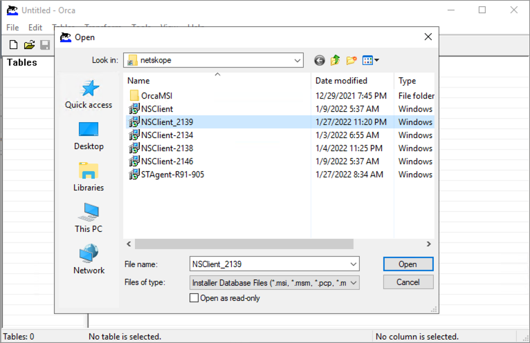You will now see the list of all tables in the installer file. Click Property to view all installer property values .
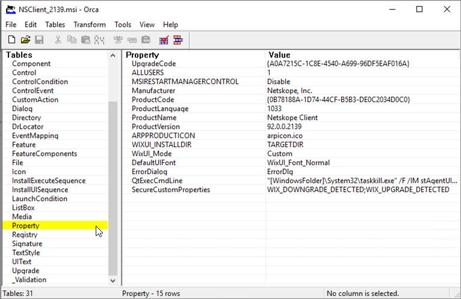Select Transform > New Transform.
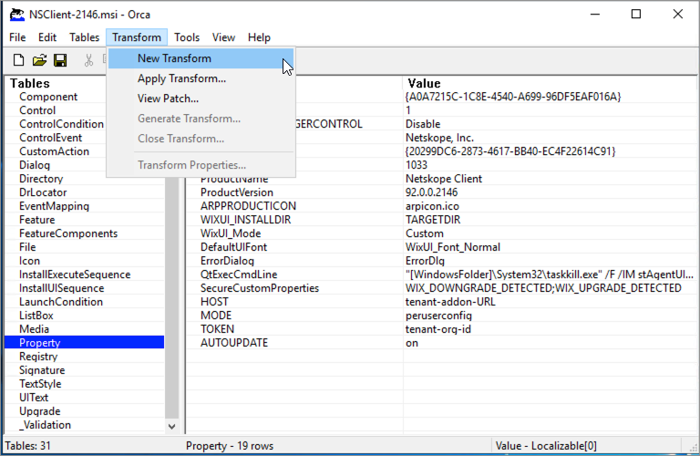To deploy Netskope Client, you will need to add the following additional property values to this table. The fields in the property table are a combination of two strings (property name and its value).
HOST - enter the tenants add-on URL (example: addon-tenantname.example.com).
TOKEN - enter the tenants organization ID.
MODE - enter peruserconfig (or the mode that you suits your deployment needs).
AUTOUPDATE - enter [ on or off ]. This is an optional value. If set to on, the client will auto updated to the next available version as specified in the client configuration.
Important
The property name must be entered in all caps
To add a new property value, select Property from the table list and then right click on the right pane and Select Add Row.
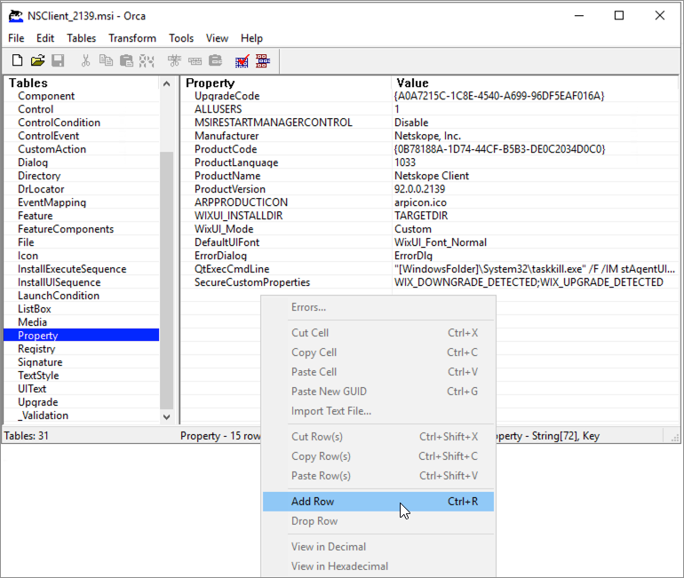Enter the Property name (in all CAPS) and then click on the Value text box and enter the value string.
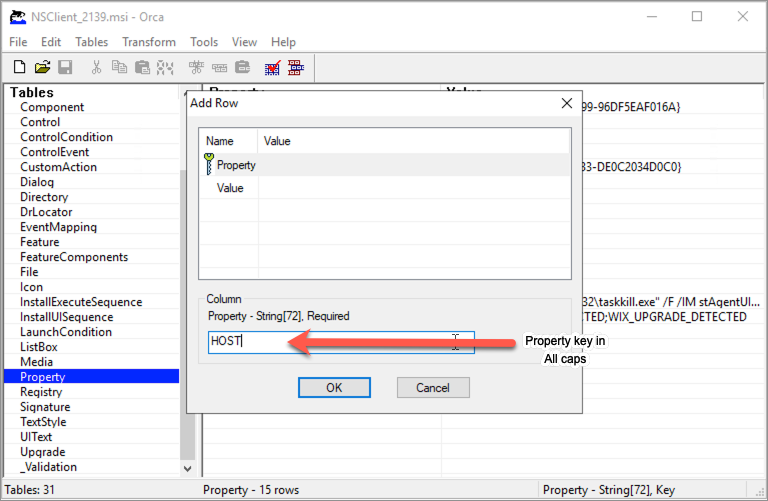Repeat this to add all the required property values.
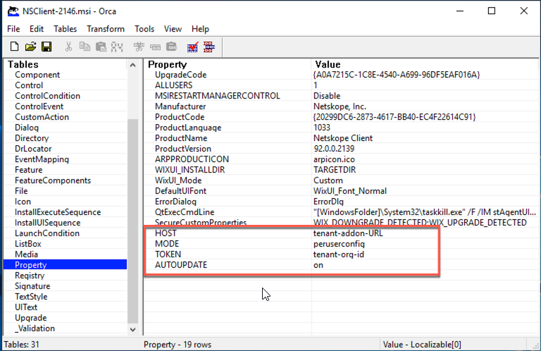Go to Transform > Generate Transform and give it a name. This creates the MST deployment file.
Create and Apply Group Policy Object
The following steps illustrate the procedure to deploy the Netskope Client using the created MST package via MS group policy objects.
Open Server Manager and goto Tools > Group Policy Management.
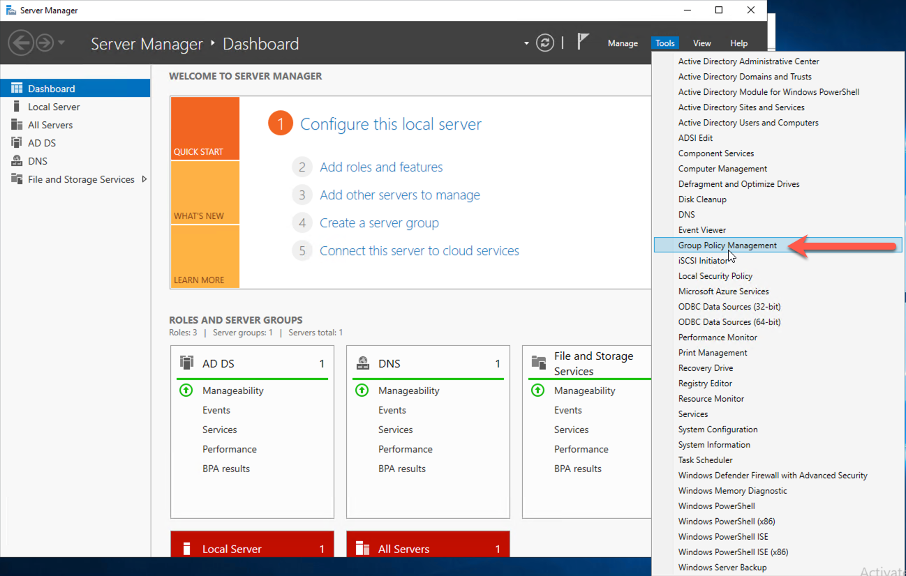In the Group Policy Management tool, expand your domain options and locate the Group Policy Object option. Right click on Group Policy Object and click New.
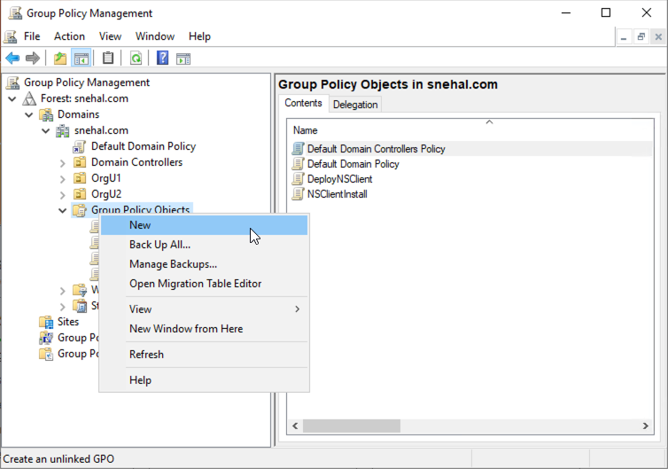Enter a name for this deployment.
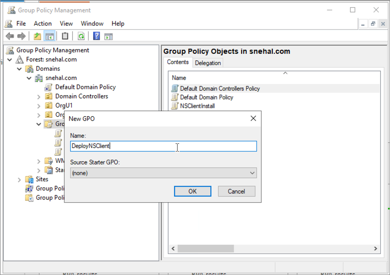Under the Group Policy Object option, right click the newly created deployment name and select Edit.
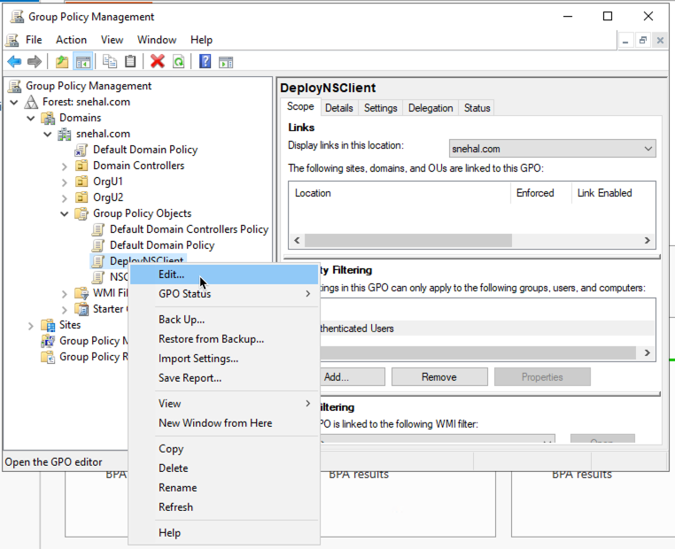This opens the Group Policy Management Editor window.
In the Group Policy Management Editor window, navigate to Computer Configuration > Policies > Software Settings > Software Installation.
Right Click on Software Installation and select New > Package and select the Netskope Installer (.msi) file.
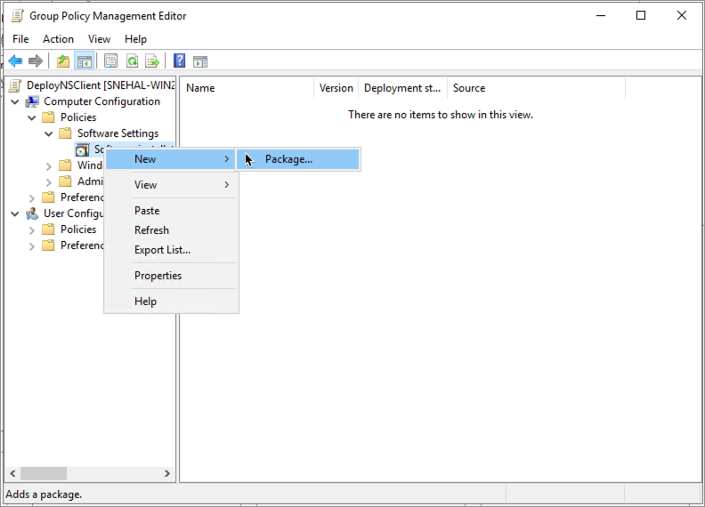In the Deploy Software pop-up window, select Advanced and click OK.
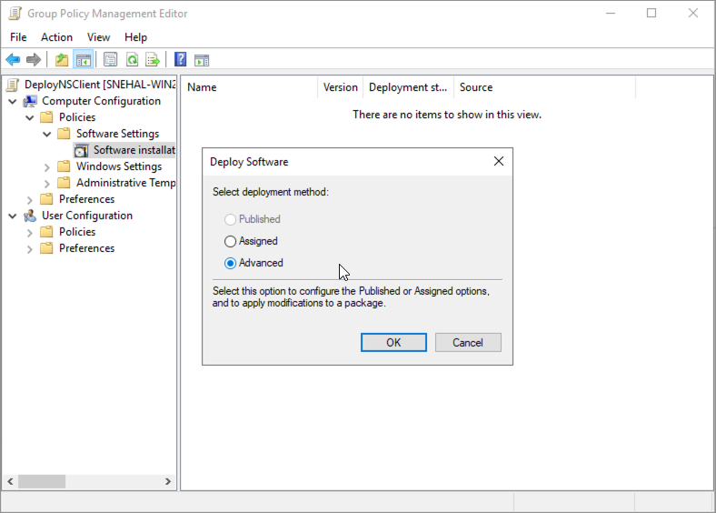In the Netskope Client Properties window, goto the Modifications tab. Click Add and select the appropriate MST file.
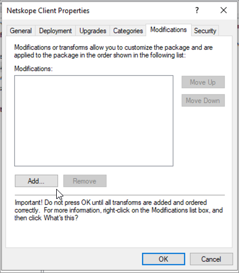Link the newly created GPO policy to the target computer or user and enforce the policy.
The following image is an example. Your OU structure may vary depending on your environment.
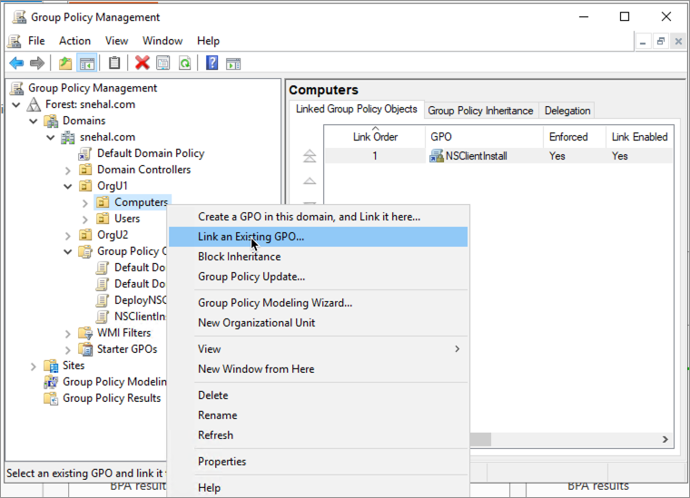Now apply the GPO policies.